15Personal y permisos
Aquí agrega a las personas que trabajan para usted. Puede elegir qué puede hacer cada una y registrar sus horas de trabajo. (Requiere el plan Pro o Business).
Actívelo en Settings › Add-ons › Staff (un complemento Pro; solo el propietario puede activarlo).
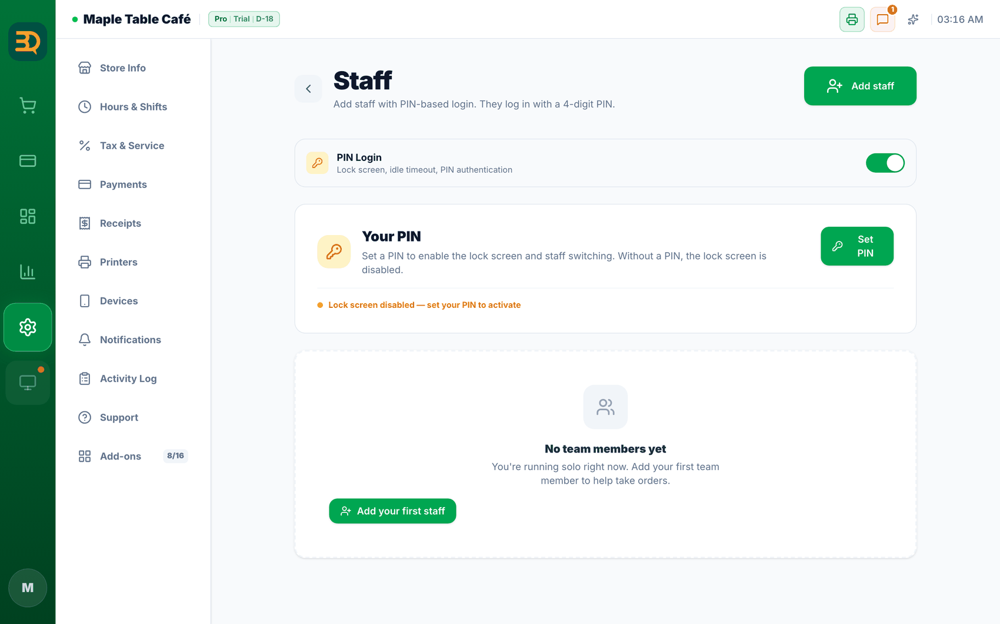
- Vaya a Settings (Configuración) y busque la página del personal.
- Toque Add staff (Agregar personal). Escriba el nombre de la persona.
- Asígnele un rol. El rol decide qué puede y qué no puede hacer en la app.
- Active Idle Lock (Bloqueo por inactividad) si quiere que la caja se bloquee sola cuando nadie la usa. (Antes se llamaba "PIN Login").
- Active el reloj de asistencia para que el personal pueda tocar para empezar y terminar su turno. Sus horas pasan solas a sus informes.
- Puede poner el nombre de un miembro del personal en un pedido en cualquier momento, incluso después de terminada la venta. (Es útil para los salones).
Complemento Staff activado o desactivado
Las funciones de personal están completamente activas solo cuando se cumplen ambas condiciones: (1) su plan es Pro o Business, y (2) el interruptor Staff en Settings › Add-ons está activado. Si falta cualquiera de las dos, algunas partes quedan bloqueadas como se muestra abajo.
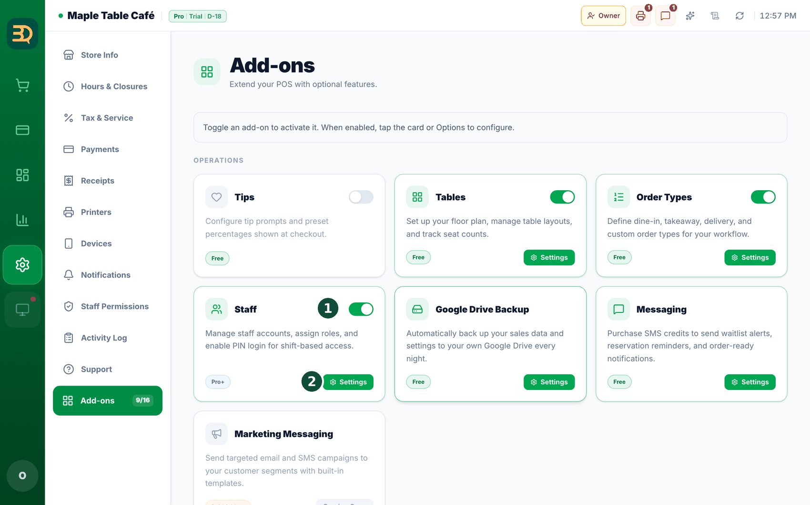
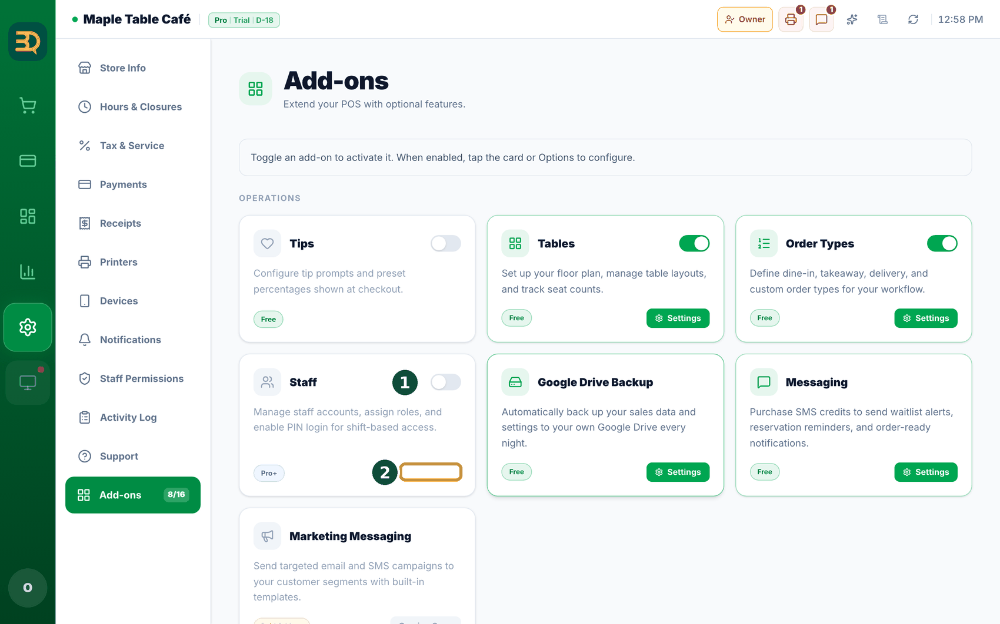
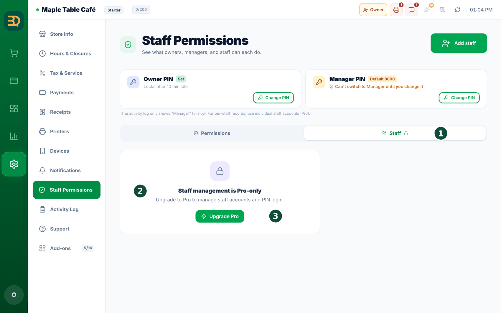
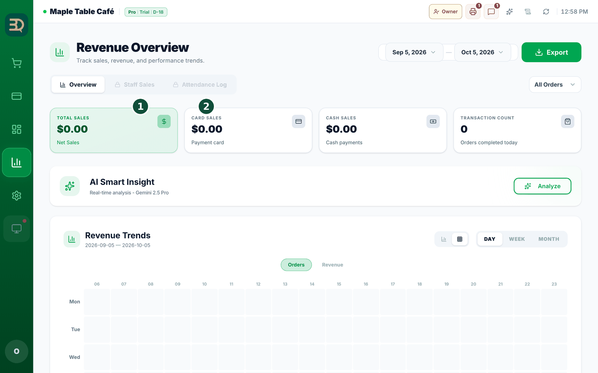

- ACTIVADO: se abren las pestañas Staff Sales (Ventas por Personal) y Attendance Log (Registro de Asistencia) de Stats (la pantalla Stats empieza en Revenue Overview). Payment History tiene un filtro All Staff (Todo el personal) y la ventana Close Day muestra etiquetas del personal. Con Idle Lock (Bloqueo por inactividad) también activado, la caja muestra una pantalla de bloqueo Select Profile para que cada persona cambie a su propio perfil.
- DESACTIVADO: esas pestañas muestran un candado, y no aparecen el filtro All Staff, las etiquetas del personal en Close Day ni la pantalla de bloqueo. Agregar y ver personas en
Settings › Staff Permissions › Staffsigue funcionando en Pro, esté como esté el interruptor. - Plan Starter: la tarjeta de complementos muestra un botón Upgrade (Actualizar) en lugar de un interruptor. La subpestaña Staff solo muestra un candado, "Staff management is Pro-only" y un botón Upgrade Pro (Actualizar a Pro).
Agregar un miembro del personal
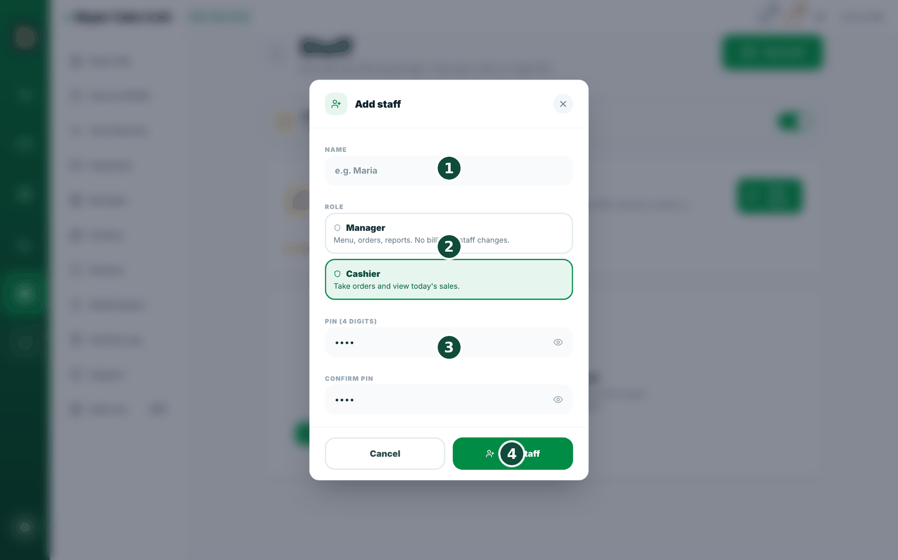
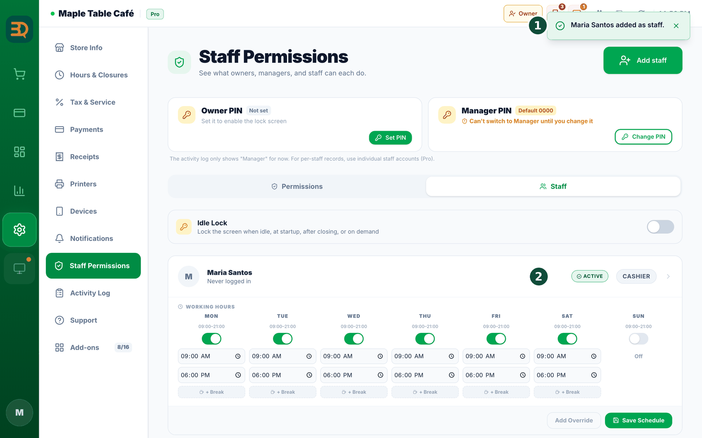
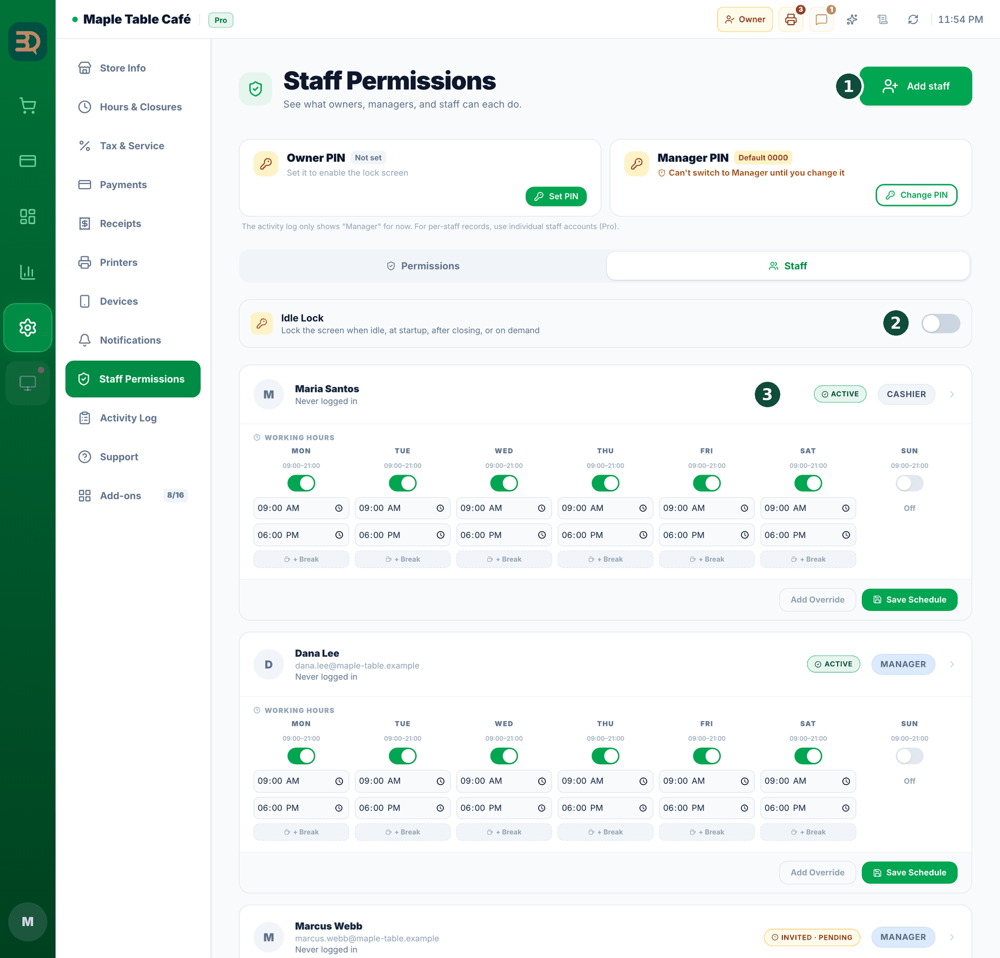
- Toque Add staff (Agregar personal). Se abre un formulario.
- Escriba el Name (Nombre) de la persona.
- Elija un Role (Rol): Manager (menú, pedidos, informes; sin cambios de facturación ni de personal) o Cashier (tomar pedidos, ver las ventas de hoy).
- Defina un PIN de 4 dígitos y confírmelo.
- Toque Add staff (Agregar personal). La persona aparece en su lista del personal y puede iniciar sesión con su PIN.
Editar o quitar a una persona
Corregir un nombre, cambiar un PIN, ocultar a alguien que se fue: antes eran cuatro controles pequeños distintos en la misma fila. Ahora hay una sola puerta: toque a la persona.
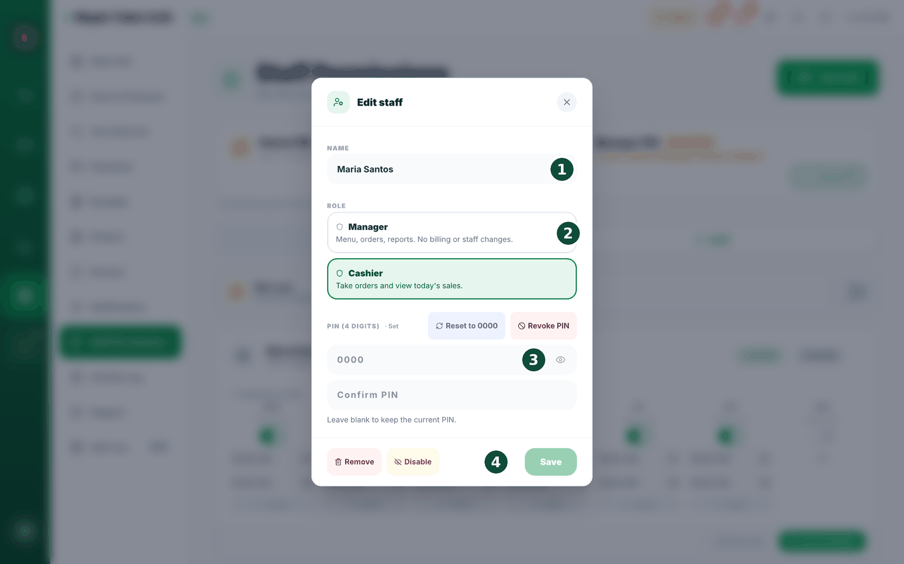
- En su lista del personal, toque el nombre (en cualquier parte de la fila de esa persona). Se abre la ventana de edición.
- Su correo aparece arriba para que esté seguro de que es la persona correcta. Corrija el Name (Nombre) si es necesario.
- Cambie el Role (Rol) si cambió su trabajo. (La fila de un propietario muestra el rol como texto simple: el rol de un propietario no se puede cambiar aquí).
- Para definir un PIN nuevo, escríbalo en los dos campos PIN (4 digits) (PIN (4 dígitos)). Si deja ambos campos en blanco, el PIN actual se mantiene; la pantalla lo indica justo debajo de los campos.
- Toque Save (Guardar). Eso es todo.
Quitar a alguien no es lo mismo que traspasar la tienda. Si vende el negocio, consúltenos sobre la transferencia de la titularidad.
Permisos, PIN de gerente y etiqueta de rol
Esta página de ajustes muestra, pantalla por pantalla, qué tiene permitido hacer un gerente y un cajero, y ahora realmente puede marcar las casillas y guardar. Toda la página se rehízo: sus dos tarjetas de PIN están una al lado de la otra en la parte superior, con la tabla grande debajo.
Settings › Staff Permissions. Los gerentes pueden abrirla y leerla; solo el propietario puede cambiarla y guardarla. Hay dos pestañas arriba: Permissions (disponible para todos) y Staff (una función Pro: "Staff management is Pro-only").
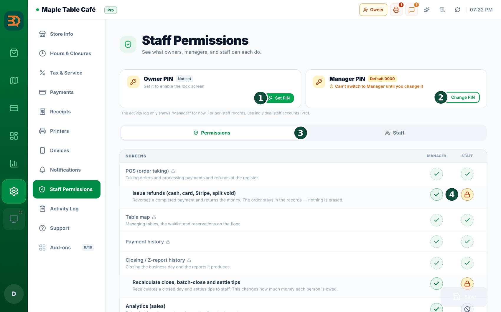
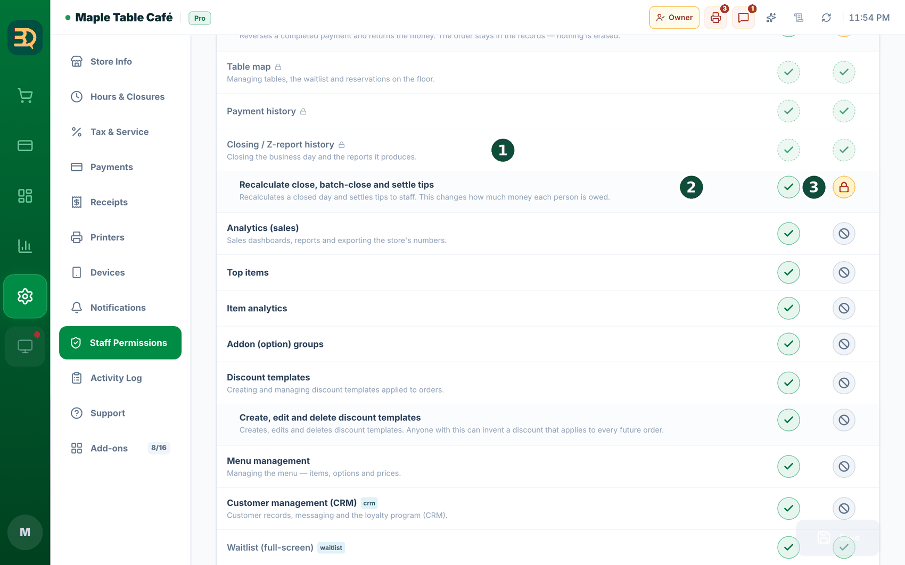
- La tabla tiene exactamente dos columnas: "Manager" y "Staff". No hay columna para el propietario, porque el propietario siempre tiene todos los permisos.
- La tabla está abierta desde el inicio: no hay nada que desplegar ni plegar. Los permisos están agrupados por pantalla (Screens · Settings tabs · Available everywhere), con las filas de permisos detallados justo debajo de cada pantalla. Una pantalla sin permisos detallados es una sola fila.
- Marque o desmarque una casilla para ese rol. La casilla de una fila de pantalla decide si ese rol puede abrir la pantalla; las casillas de abajo deciden las acciones individuales. Una fila que cambió respecto de su valor predeterminado muestra un marcador para restablecerla.
- Fíjese en las etiquetas de color junto a algunas filas: PIN approval (un gerente tiene que escribir primero un PIN), Limited view (ve una parte), Restricted (bloqueado) y Open the page, que decide si la pantalla aparece o no.
- Una fila con candado no se puede cambiar, ni siquiera el propietario (elementos solo para el propietario o fijos). La tabla no tiene cuadro de búsqueda ni el interruptor "Differences only", así que revísela de arriba abajo.
- Toque Save (Guardar) en la parte superior de Settings cuando termine. Las filas sin guardar se cuentan por usted, y Discard changes deja todo como estaba.
Settings › Staff Permissions › Staff) solo evita que la caja se bloquee sola, nada más. El personal sigue iniciando sesión con su propio PIN, la etiqueta de rol sigue cambiando, el registro de actividad sigue guardando quién hizo qué, y todos los permisos de esta página se siguen aplicando. (Desactivar el complemento Staff (Personal) es lo que deja de distinguir a las personas).Las tarjetas de PIN, una al lado de la otra en la parte superior de esta página
Las tarjetas del PIN del propietario y del PIN de gerente están en esta misma página, una al lado de la otra en la parte superior. Cada una le muestra su estado de un vistazo: Set (Configurado), "Default 0000" o Not set (Sin configurar). Debajo de la tarjeta del propietario: "Locks after 10 min idle" una vez configurado, o "Set it to enable the lock screen" si no lo está. El PIN de gerente permite que quien esté de turno haga tareas de gerente sin necesitar una cuenta aparte; solo el propietario puede definirlo o cambiarlo. Un gerente que abre esta página ve un candado y "Only the owner can change this card."
La etiqueta de rol: cambiar quién es esta caja ahora mismo
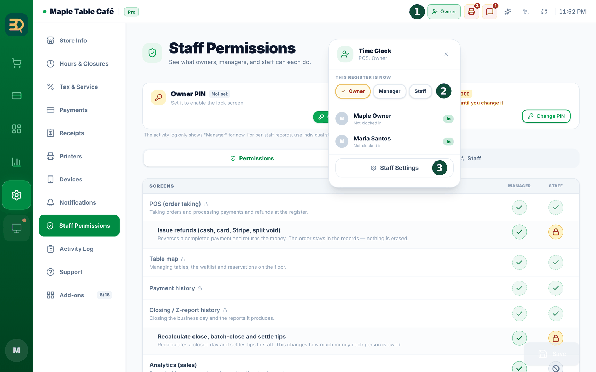
- Mire la barra superior: hay una etiqueta de color que muestra como qué está actuando este POS: Owner (ámbar), Manager (azul) o Staff (gris).
- Tóquela. Se abre un pequeño panel con los tres roles.
- Bajar de rol (de propietario a personal, por ejemplo, cuando entrega la caja a alguien) es un solo toque. Sin PIN: está cediendo poder, no tomándolo.
- Subir de rol pide el PIN de ese rol ("Enter the manager PIN"). Las filas a las que este dispositivo no puede acceder aparecen en gris antes de tocarlas, así que nunca llega a un callejón sin salida.
¿Olvidó un PIN?
Nadie tiene que llamar a soporte porque alguien olvidó un PIN. Cada PIN tiene su propia forma de recuperarse.
El PIN del propietario: un código a su correo
Toque la etiqueta de rol en la barra superior (el mismo panel que usa para cambiar de rol). En la fila del propietario hay "Forgot your PIN?". Debe haber iniciado sesión como propietario en este dispositivo.
- Toque "Forgot your PIN?". BrewDesk envía un código de 6 dígitos al correo de la cuenta: "We sent a 6-digit code to your account email. Enter it below along with a new PIN."
- Escriba el Email code, luego su New PIN (4 digits) (Nuevo PIN (4 dígitos)), y confírmelo.
- Toque Set new PIN. Verá "Owner PIN reset. Use the new PIN next time."
El PIN de gerente: el propietario simplemente define uno nuevo
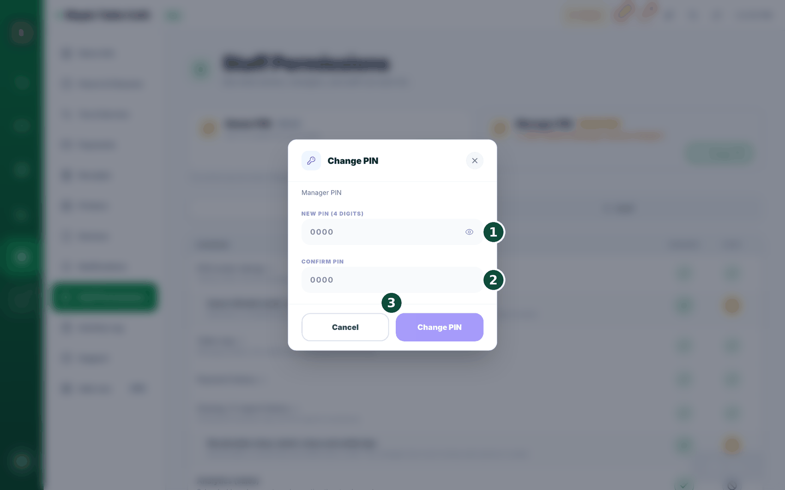
- Abra
Settings › Staff Permissionsy busque la tarjeta del PIN de gerente en la parte superior. - Toque Change PIN (o Set PIN (Configurar PIN) si todavía no hay uno) y escriba el nuevo código. Solo el propietario.
- Comunique el nuevo código al mostrador.
Settings › Staff Permissions › Staff, abra a esa persona y "Reset to 0000" sigue ahí para usted; puede usarlo un propietario o un gerente. Pídale que defina su propio PIN inmediatamente después.Temas relacionados
¿Necesita más ayuda?
Puede enviar un ticket de soporte desde la app en Settings › Support.